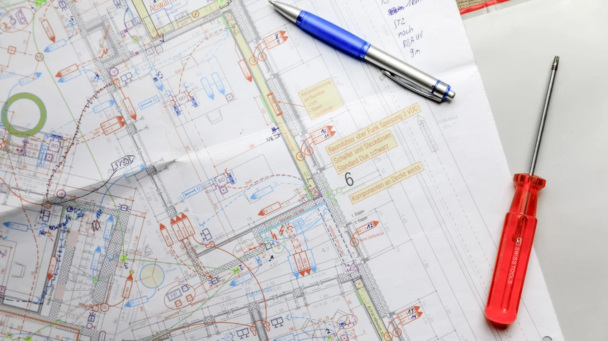
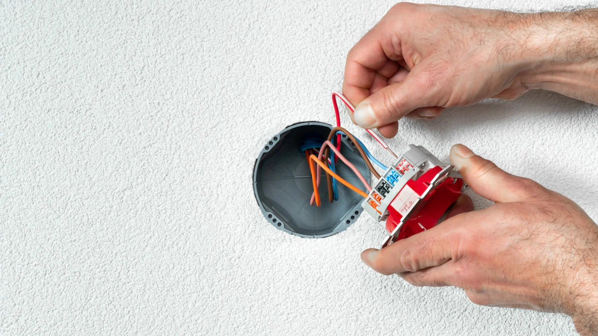

Project Overview
During my time at Feller AG by Schneider Electric, I contributed to the development of a modern serverless cloud architecture to power their digital solutions for connected buildings. The architecture was designed to support the company's digital transformation initiatives, including their "Wiser by Feller" smart home automation system.
This serverless architecture leveraged AWS cloud services to create a scalable, resilient, and cost-effective backend for multiple applications, eliminating the need for traditional server management while ensuring high availability and performance. The solution supported both customer-facing applications and internal operational tools, enabling Feller to modernize their digital offerings and improve their market position in the smart home and building automation sector.
The Challenge
Feller AG faced several challenges in their digital transformation journey that necessitated a modern cloud-based approach:
- Their existing infrastructure was based on legacy systems with high maintenance costs
- Scaling limitations prevented rapid response to varying loads, especially during peak usage periods
- Development cycles were slow due to complex deployment processes
- There was a need for improved security and compliance features to protect sensitive user data
- The system needed to support real-time updates and notifications for connected home devices
- Cost predictability was a concern with traditional always-on server infrastructure
"We needed a modern cloud architecture that could scale dynamically, reduce operational overhead, and allow our teams to focus on innovation rather than infrastructure management."
The challenge was to design a serverless architecture that would not only address these immediate concerns but also provide a future-proof foundation for the company's growing portfolio of connected building solutions, ensuring flexibility, reliability, and cost-effectiveness.
The Solution
We designed and implemented a comprehensive serverless architecture on AWS that leveraged multiple cloud services to create a robust, scalable, and cost-effective solution:

🔄
AWS CloudFormation
Infrastructure as Code (IaC) implementation for consistent, version-controlled deployment of cloud resources across environments.
💾
Amazon S3
Highly available object storage for static assets, configuration files, and data backups with lifecycle policies.
⚡
AWS Lambda
Serverless compute services running backend logic without server management, automatically scaling with demand.
🌐
Amazon CloudFront
Content delivery network (CDN) for fast, secure delivery of application assets with global reach and low latency.
🔐
AWS IAM
Fine-grained access control with least privilege principles to secure all cloud resources and user access.
📊
Amazon DynamoDB
Fully managed NoSQL database for high-performance, scalable storage of device and user configuration data.
📨
Amazon SNS
Pub/sub messaging service for real-time notifications and alerts to both users and internal systems.
📝
Amazon RDS
Managed relational database service for structured data storage with automated backups and scaling.
Key Features
- Auto-scaling architecture: Resources automatically scale up or down based on demand, eliminating capacity planning concerns.
- Pay-per-use model: Cost optimization by only paying for actual compute resources used rather than idle servers.
- DevOps integration: CI/CD pipelines for automated testing and deployment of infrastructure and application code.
- Multi-environment support: Separate development, testing, and production environments with consistent configurations.
- High availability: Multi-AZ (Availability Zone) deployment for resilience against infrastructure failures.
- Enhanced security: Comprehensive security controls including encryption at rest and in transit, VPC isolation, and least privilege access.
- Real-time data processing: Event-driven architecture for handling device data updates and user interactions.
- Monitoring and observability: Integrated logging, monitoring, and alerting for system health and performance.
My Role & Contributions
As a Software Engineer on this project, my responsibilities included:
- Designing and implementing Infrastructure as Code (IaC) using CloudFormation templates
- Developing serverless backend services with AWS Lambda and integrating with other AWS services
- Creating RESTful APIs using API Gateway for communication between frontend applications and backend services
- Implementing data storage solutions across DynamoDB and RDS based on data access patterns
- Setting up CI/CD pipelines for automated testing and deployment of infrastructure changes
- Configuring CloudFront distributions and S3 buckets for optimal content delivery
- Designing and implementing IAM roles and policies following the principle of least privilege
- Creating event-driven notification systems using SNS for real-time updates
Technology Stack
AWS
CloudFormation
Lambda
S3
CloudFront
DynamoDB
RDS
IAM
SNS
API Gateway
Node.js
Terraform
Git
CI/CD
Results & Impact
The implementation of the serverless cloud architecture delivered significant benefits for Feller AG:
- Achieved 99.99% uptime for critical services, improving customer satisfaction and trust
- Reduced infrastructure costs by 40% compared to the previous solution by eliminating idle server capacity
- Decreased deployment time from days to minutes, enabling more frequent feature releases
- Improved scalability allowed the system to handle 10x more simultaneous users during peak periods
- Enhanced security posture with comprehensive logging, monitoring, and automated security controls
- Simplified compliance reporting with built-in audit trails and access controls
- Enabled development teams to focus on feature development rather than infrastructure management
- Provided a platform for rapid prototyping and deployment of new connected building features

The serverless architecture created a foundation for Feller AG's digital transformation, enabling them to innovate faster, scale more efficiently, and provide better experiences for both internal users and customers interacting with their smart home solutions.
"The serverless architecture has transformed our ability to develop and deliver digital services. We've seen dramatic improvements in development velocity, operational efficiency, and can now respond to market opportunities much faster than before."